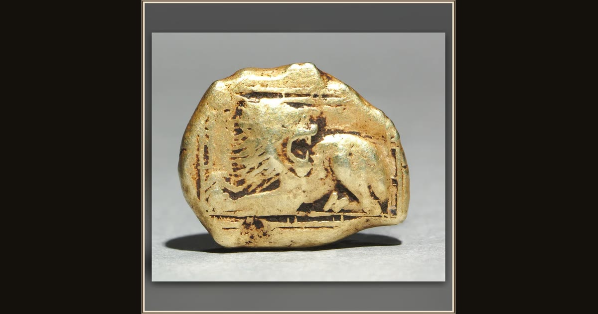

Stater: Lion (obverse); Incuse Punches (reverse)
Greek, minted at Miletos (Ionia) · 600–550 BCE · cma
An electrum stater minted at Miletos bears a lion; Herodotus names Miletus as the city governed by Aristagoras while Histiaeus remained in Susa (5.30.2) Explore its place in Herodotus's Histories, Book V, chapter 71.